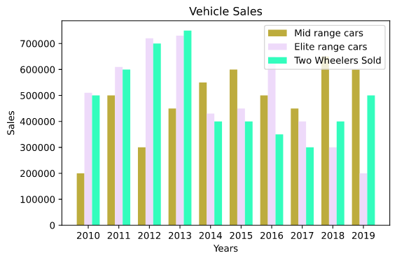
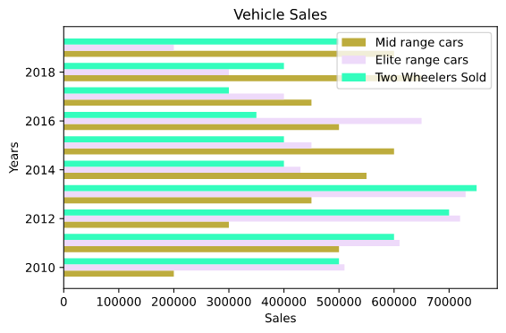
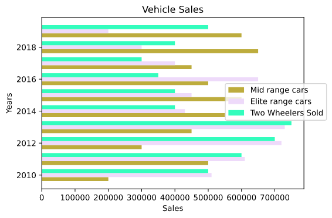

A bar plot is a plot that presents categorical data with rectangular bars with heights or lengths proportional to the values these represent.
Or we could simply say,a plot that represents the data using the rectangular bars is called a bar plot.
To plot bar charts/plots with matplotlib we take the following course of actions:
Importing the libraries
# importsfrom matplotlib import pyplot as plt import numpy as np
Getting the data in hand
# data to be plotted
years = np.array([2010,2011,2012,2013,2014,2015,2016,2017,2018,2019])
mid_range_cars_sold = np.array([200000,500000,300000,450000,550000,600000,500000,450000,650000,600000])
two_wheelers_sold = np.array([500000,600000,700000,750000,400000,400000,350000,300000,400000,500000])
elite_range_cars_sold = np.array([510000,610000,720000,730000,430000,450000,650000,400000,300000,200000])
There are two types of bar plots:
Vertical Bar Plots: Plots with bars drawn vertically are known as vertical bar plots.
Horizontal Bar Plots: Plots with bars drawn horizontally are known as horizontal bar plots.
So, we will be plotting vertical bar plots at first.
# offset
offset = 0.25
# plotting the data for mid range cars
plt.bar(years - offset,mid_range_cars_sold,width=offset,color="#bdac3d",label="Mid range cars") # the bar() method is used to plot bar graphs.The x-axis,y-axis are the least requirements for it to draw a plot# the width attribute defines the width of the bar # plotting the data for elite range of cars
plt.bar(years,elite_range_cars_sold,width=offset,color="#eedafa",label="Elite range cars")
# plotting data for two wheelers
plt.bar(years + offset,two_wheelers_sold,width=offset,color="#33fdbd",label="Two Wheelers Sold")
plt.legend()
plt.title("Vehicle Sales")
plt.xlabel("Years")
plt.ylabel("Sales")
plt.xticks(ticks=years,label=years) """ Not all ticks are shown by default and also sometimes we require to change the ticks to have different values that's where the xticks() method comes in handy """
plt.tight_layout()
plt.show()
The following plot then pops up:

Vertical Bar Plot
Now, to draw a horizontal bar plot what we need to do is simply replace the bar() method with the barh() method and the width attribute with the height attribute.
# plotting the data for mid range cars
plt.barh(years - offset,mid_range_cars_sold,height=offset,color="#bdac3d",label="Mid range cars") # the height attribute defines the height of the bar # plotting the data for elite range of cars
plt.barh(years,elite_range_cars_sold,height=offset,color="#eedafa",label="Elite range cars")
# plotting data for two wheelers
plt.barh(years + offset,two_wheelers_sold,height=offset,color="#33fdbd",label="Two Wheelers Sold")
plt.legend()
plt.title("Vehicle Sales")
plt.ylabel("Years")
plt.xlabel("Sales")
plt.tight_layout()
plt.show()# plotting the data for mid range cars
This creates the following horizontal bar plot:

Horizontal Bar Plot
Extras :):):)
We can see that in our plots the legend takes a predefined position and therefore at times messes up with the graph.
There's a way to fix that.We can pass an loc argument to the legend() method. This argument takes the following values:
Either an String which defines a position i.e. "upper left","upper right","lower left" and "lower right"
Or a Tuple which specifies the distance from x and y axis. If the distance is between 0 and 1 the legend is placed within the plot boundary and if it is greater than 1 it escapes the plot boundary. Example : (0.5,0.6)
Here, we will fix the legend for our horizontal plot:
# plotting the data for mid range cars
plt.barh(years - offset,mid_range_cars_sold,height=offset,color="#bdac3d",label="Mid range cars") # the height attribute defines the height of the bar # plotting the data for elite range of cars
plt.barh(years,elite_range_cars_sold,height=offset,color="#eedafa",label="Elite range cars")
# plotting data for two wheelers
plt.barh(years + offset,two_wheelers_sold,height=offset,color="#33fdbd",label="Two Wheelers Sold")
plt.legend(loc=(0.7,0.4)) # passing the exact position we want the legend to be at
plt.title("Vehicle Sales")
plt.ylabel("Years")
plt.xlabel("Sales")
plt.tight_layout()
plt.show()# plotting the data for mid range cars
Our fixed plot looks like this:

Bar Plot With Fixed Legend
That's it...See you in the next tutorial...until then a H3avren style Ta-Da...